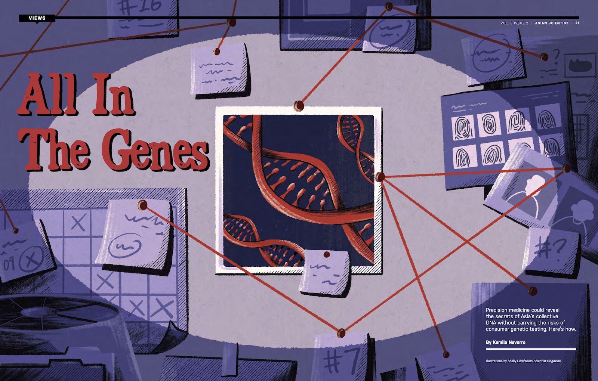

Editorial feature · Asian Scientist Magazine
All In The Genes
I unpacked the rise of consumer genetic testing in Asia, navigating its promise for precision medicine alongside thornier questions of privacy and genetic representation in the region.
Read story →